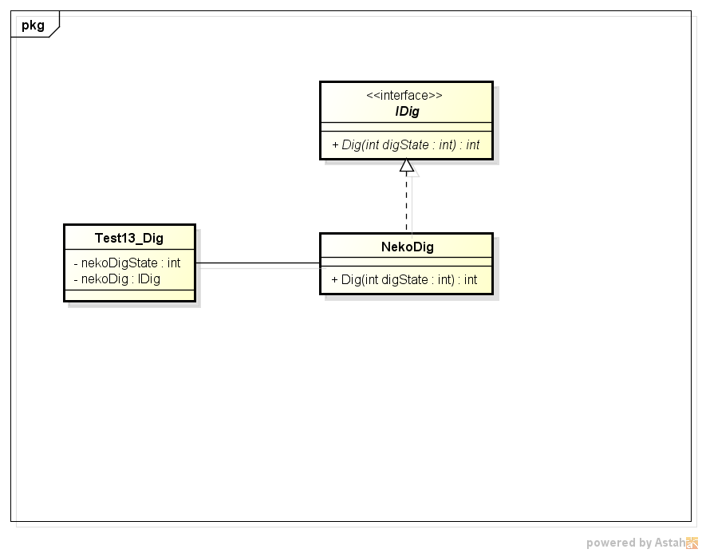

Digパターンについて。
毎フレームごとに処理を少しずつ進めていくデザインパターン。
処理を毎フレームごとに、少しずつ掘り進めて行くように実行されることからDigパターンと呼んでいる。 Stateパターンの亜種であるが、上から下に処理が流れるイメージを重要視している。
ゲーム開発における短いアニメーションなどに使える。
クラス図
クラス図ダウンロード
サンプル
package test_a;
import com.amaraimusi.zss_lib.CalcUtil;
public class Test013Dig {
private static int m_nekoDigStt=0;
private static NekoDig m_nekoDig;
public static void main(String[] args) {
CalcUtil.init();
System.out.println("テスト開始");
//Digクラス
m_nekoDig=new NekoDig();
//擬似スレッド
for(int i=0;i<100;i++){
m_nekoDigStt=m_nekoDig.Dig(m_nekoDigStt);
if(m_nekoDigStt==-1){
System.out.println("別の処理");
System.out.println("Digクラスの処理が終了しました。");
break;
}
}
System.out.println("テスト終了");
}
}
//Digインターフェース
interface IDig{
abstract int Dig(int digState);
}
//★Digクラス。 毎フレーム、少しずつ処理を進めていく仕組みを実装。
class NekoDig implements IDig{
@Override
public int Dig(int digState) {
if(digState==0){
System.out.println("処理その１");
digState=1;//dig状態を1にする。
return digState;
}
if(digState==1){
//10分の１の確率で状態１を抜ける。
System.out.println("処理その２");
int r=CalcUtil.rnd(10);
if(r==1){
digState=2;//dig状態2
}
return digState;
}
if(digState==2){
System.out.println("処理その３");
digState=-1;//dig状態を-1にしてdig処理終了
return digState;
}
return -1;
}
}
サンプルダウンロード（Test013Dig.java）